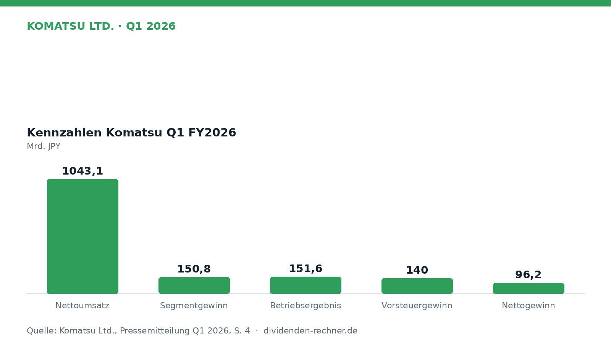
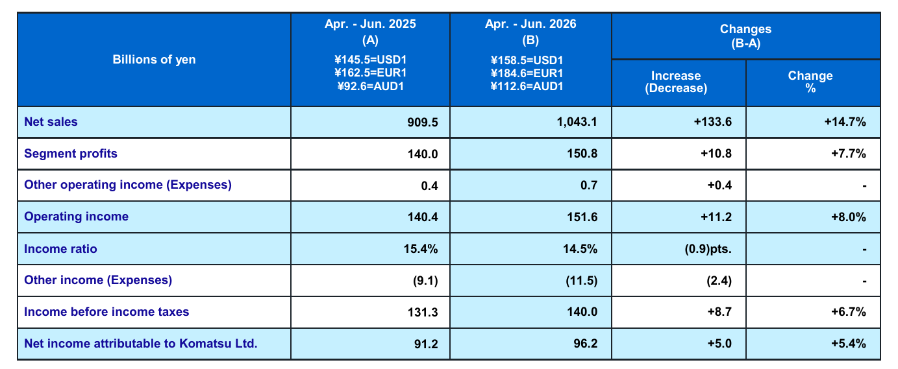
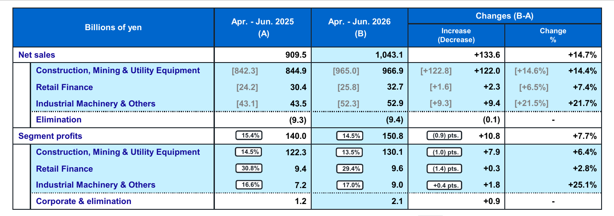
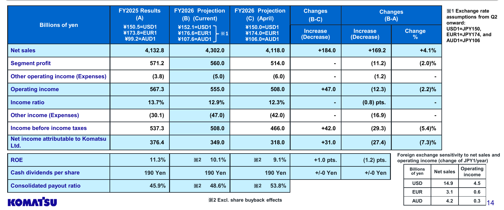

Quartalszahlen

Komatsu steigert Umsatz um knapp 15 Prozent, Marge sinkt leicht
Komatsu legt im Auftaktquartal beim Umsatz kräftig zu. Höhere Kosten und Zölle bremsen jedoch die Profitabilität.

Kurz gesagt
Umsatz: 1.043,1 Mrd. JPY (14,7 %) · Gewinn: 96,2 Mrd. JPY (5,4 %)
- Ergebnis: Umsatz und Betriebsgewinn wuchsen deutlich, der Reingewinn kletterte um 5,4 Prozent.
- Ursache: Ein schwacher Yen und höhere Verkaufspreise glichen schwächere Absätze in Asien und Nahost aus.
- Bremse: Steigende Beschaffungskosten, Frachtraten und US-Zölle drückten die operative Gewinnmarge um 0,9 Prozentpunkte.
Die ausführliche Version
Komatsu ist mit zweistelligem Erlöswachstum in das Geschäftsjahr gestartet. Vor allem Währungseffekte und Preiserhöhungen stützten das Geschäft, während gestiegene Kosten die Profitabilität dämpften. Das Management passte infolgedessen die Gesamtjahresprognose nach oben an.

Eigene Darstellung nach Daten aus: Komatsu Ltd., Quartalszahlen Q1 2026 vom 2026-07-29.Starkes Auslandsgeschäft stützt die Segmente
Im ersten Quartal kletterte der Konzernumsatz um 14,7 Prozent auf 1.043,1 Milliarden JPY. Das Betriebsergebnis verbesserte sich um 8,0 Prozent auf 151,6 Milliarden JPY. Unter dem Strich stand ein Nettogewinn von 96,2 Milliarden JPY, was einem Zuwachs von 5,4 Prozent gegenüber dem Vorjahreszeitraum entspricht.

Finanzergebnisse des ersten Quartals FY2026. Quelle: Komatsu Ltd., Quartalszahlen Q1 2026 vom 2026-07-29, S. 4. Ausschnitt nur zugeschnitten, sonst unverändert.Das größte Geschäftsfeld, die Bau- und Bergbaumaschinen, legte beim Erlös um 14,4 Prozent auf 966,9 Milliarden JPY zu. Ohne Wechselkurseffekte betrug das Plus allerdings nur 3,7 Prozent. Zuwächse in Nordamerika, Lateinamerika und Afrika fingen deutliche Einbrüche in Asien und Nahost auf. Der Segmentgewinn stieg um 6,4 Prozent auf 130,1 Milliarden JPY. Im Segment Industriemaschinen wuchs der Gewinn dank der Nachfrage nach Excimer-Laser-Wartungen in der Halbleiterindustrie sogar um 25,1 Prozent auf 9,0 Milliarden JPY.

Umsatz und Ergebnis nach Geschäftssegmenten. Quelle: Komatsu Ltd., Quartalszahlen Q1 2026 vom 2026-07-29, S. 5. Ausschnitt nur zugeschnitten, sonst unverändert.Dividende bleibt stabil geplant
Für das gesamte Geschäftsjahr hält Komatsu an einer Ausschüttung von 190 Yen je Aktie fest. Bezogen auf die aktuelle Gewinnprognose entspricht dies einer rechnerischen Payout Ratio von 48,6 Prozent (ohne Effekte aus Aktienrückkäufen). Im vorangegangenen Geschäftsjahr lag diese Quote bei 45,9 Prozent.
Negativer Free Cashflow durch Vorratsaufbau
In der Bilanz zeigte sich im ersten Quartal ein Aufbau des Umlaufvermögens. Die Vorräte erhöhten sich stichtagsbezogen auf 1.715,2 Milliarden JPY, weshalb die Mittelbindung im Working Capital mit minus 65,4 Milliarden JPY zu Buche schlug. Der operative Cashflow belief sich auf 65,1 Milliarden JPY, während die Investitionstätigkeit 66,8 Milliarden JPY band. Daraus ergab sich für das Vierteljahr ein Free Cashflow von minus 1,6 Milliarden JPY.
Die Nettoverschuldung stieg zum 30. Juni auf 1.071,7 Milliarden JPY nach 901,3 Milliarden JPY zum Ende des vorigen Geschäftsjahres. Die Eigenkapitalquote gab im selben Zeitraum von 54,7 Prozent auf 51,8 Prozent nach.
Ausblick angehoben, Risiken bleiben präsent
Das Management hob die Prognose für das Gesamtjahr an: Der Umsatz soll nun 4.302,0 Milliarden JPY erreichen, ein Zuwachs von 4,1 Prozent gegenüber dem Vorjahr. Beim Betriebsergebnis rechnet Komatsu mit 555,0 Milliarden JPY, was einem Rückgang von 2,2 Prozent entspricht.

Gesamtjahresprognose für das Geschäftsjahr 2026. Quelle: Komatsu Ltd., Quartalszahlen Q1 2026 vom 2026-07-29, S. 14. Ausschnitt nur zugeschnitten, sonst unverändert.Als Belastung wirken weiterhin geopolitische Verwerfungen im Nahen Osten, die Lieferketten verlängern und Transportkosten nach oben treiben. Hinzu kommen zusätzliche Belastungen durch US-Zölle sowie eine verhaltene Nachfrage nach Kohlebergbaugeräten in Indonesien.
Quelle: Komatsu Ltd., Quartalszahlen Q1 2026 vom 2026-07-29. Rechenwege eigene Berechnung. Keine Anlageberatung.
Hinweis: Dieser Text dient der allgemeinen Information und ist weder Anlage-, Steuer- noch Rechtsberatung. Kapitalanlagen sind mit Risiken verbunden, bis hin zum Totalverlust.